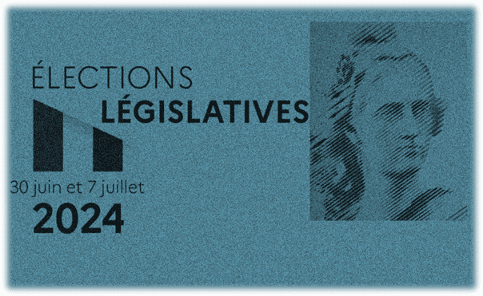

Expertise de données
Conseils et Solutions Business
Accueil
Savoirs-faire
Portfolio
Contact
Portfolio
Let's make sense of your data !*
*Donnons du sens à vos données
Titre du Projet

►
❚❚
Description du projet...
Outils
Librairies
Fermer
Your browser does not support the video tag.